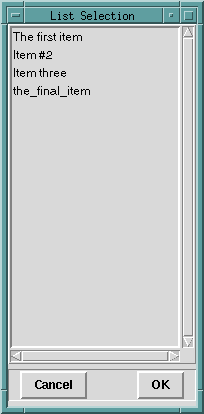
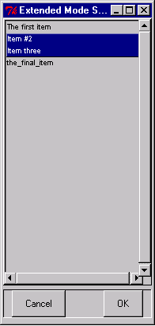

popup_select_items/ [2,3,4] — present popup selection list
popup_select_items(SourceList, ChoiceList)
popup_select_items(SourceList, Options, ChoiceList)
popup_select_items(Interp, SourceList, Options, ChoiceList)These predicates present popup lists to the user, who is expected to choose one or more items. The shorter versions are defined by
popup_select_items(SourceList, ChoiceList)
:-
popup_select_items(tcli, SourceList, [ ], ChoiceList) .
popup_select_items(SourceList, Options, ChoiceList)
:-
popup_select_items(tcli, SourceList, Options, ChoiceList) .For the general call
popup_select_items(Interp, SourceList, Options, ChoiceList)Interp should be an atom naming a Tcl interpreter, SourceList should be a list of atoms, ChoiceList should be an uninstantiated variable, and Options should be a list of equations of the forms:
mode = SelectMode
title = Atomwhere SelectMode is one of: browse single multiple extended.
If the selection mode is single or browse, at most one element can be selected in the listbox at once. In both of these modes, clicking button 1 on an element selects it and deselects any other selected item. In browse mode it is also possible to drag the selection with button 1.
If the selection mode is multiple or extended, any number of elements may be selected at once, including discontiguous ranges. In multiple mode, clicking button 1 on an element toggles its selection state without affecting any other elements. In extended mode, pressing button 1 on an element selects it, deselects everything else, and sets the anchor to the element under the mouse; dragging the mouse with button 1 down extends the selection to include all the elements between the anchor and the element under the mouse, inclusive.
The call
?- popup_select_items(['The first item', 'Item #2', 'Item three', the_final_item ], Selection).produces the popup shown below:

In this case, the user is allowed to select a single item; if the user selected “Item three” and clicked OK, the result would be:
Selection = [Item three].Even though in this case the user was restricted to selection of one item, the popup_select_items/_ predicate returns a list of the selected items.
The Options argument for popup_select_items/[3,4] allows the programmer to place the popup list box in any of the other standard Tk listbox selection modes. For example, the call
?- popup_select_items(['The first item', 'Item #2', 'Item three', the_final_item],
[mode = extended, title = 'Extended Mode Selection'],
Selection).will popup a list box whose appearance is identical (apart from the different title requested) to the previous listbox. However, it will permit selection of ranges of elements, as seen below

The result of clicking OK will be: Selection = [Item #2,Item three].
The default Tcl interpreter for popup_select_items/[2,3] is tcli as shown above. This interpreter is NOT automatically intialized by alsdev. You must first run init_tk_alslib/0 or init_tk_alslib/1, or run init_tk_alslib/2 with Interp = tcli. If you wish to run popup_select_items/3 with Interp bound to a Tcl interpreter I other than tcli, you must first run init_tk_alslib/2 with Interp bound to this same I (only once is necessary).